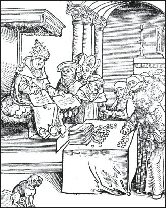

Stories serve as the foundations and pillars of human societies. As history unfolded, stories about gods, nations and corporations grew so powerful that they began to dominate objective reality. Believing in the great god Sobek, the Mandate of Heaven or the Bible enabled people to build Lake Fayum, the Great Wall of China and Chartres Cathedral. Unfortunately, blind faith in these stories meant that human efforts frequently focused on increasing the glory of fictional entities such as gods and nations, instead of bettering the lives of real sentient beings.
Does this analysis still hold true today? At first sight, it seems that modern society is very different from the kingdoms of ancient Egypt or medieval China. Hasn’t the rise of modern science changed the basic rules of the human game? Wouldn’t it be true to say that despite the ongoing importance of traditional myths, modern social systems rely increasingly on objective scientific theories such as the theory of evolution, which simply did not exist in ancient Egypt or medieval China?
We could of course argue that scientific theories are a new kind of myth, and that our belief in science is no different from the ancient Egyptians’ belief in the great god Sobek. Yet the comparison doesn’t hold water. Sobek existed only in the collective imagination of his devotees. Praying to Sobek helped cement the Egyptian social system, thereby enabling people to build dams and canals that prevented floods and droughts. Yet the prayers themselves didn’t raise or lower the Nile’s water level by a millimetre. In contrast, scientific theories are not just a way to bind people together. It is often said that God helps those who help themselves. This is a roundabout way of saying that God doesn’t exist, but if our belief in Him inspires us to do something ourselves – it helps. Antibiotics, unlike God, help even those who don’t help themselves. They cure infections whether you believe in them or not.
Consequently, the modern world is very different from the premodern world. Egyptian pharaohs and Chinese emperors failed to overcome famine, plague and war despite millennia of effort. Modern societies managed to do it within a few centuries. Isn’t it the fruit of abandoning intersubjective myths in favour of objective scientific knowledge? And can’t we expect this process to accelerate in the coming decades? As technology allows us to upgrade humans, overcome old age and find the key to happiness, so people would care less about fictional gods, nations and corporations, and focus instead on deciphering the physical and biological reality.
In truth, however, things are far more complicated. Modern science certainly changed the rules of the game, but it did not simply replace myths with facts. Myths continue to dominate humankind. Science only makes these myths stronger. Instead of destroying the intersubjective reality, science will enable it to control the objective and subjective realities more completely than ever before. Thanks to computers and bioengineering, the difference between fiction and reality will blur, as people reshape reality to match their pet fictions.
The priests of Sobek imagined the existence of divine crocodiles, while pharaoh dreamt about immortality. In reality, the sacred crocodile was a very ordinary swamp reptile dressed in golden fineries, and pharaoh was as mortal as the simplest of peasants. After death, his corpse was mummified using preservative balms and scented perfumes, but it was as lifeless as one can get. In contrast, twenty-first-century scientists might be able to really engineer super-crocodiles, and to provide the human elite with eternal youth here on earth.
Consequently the rise of science will make at least some myths and religions mightier than ever. To understand why, and to face the challenges of the twenty-first century, we should therefore revisit one of the most nagging questions of all: how does modern science relate to religion? It seems that people have already said a million times everything there is to say about this question. Yet in practice, science and religion are like a husband and wife who after 500 years of marriage counselling still don’t know each other. He still dreams about Cinderella and she keeps pining for Prince Charming, while they argue about whose turn it is to take out the rubbish.
Germs and Demons
Most of the misunderstandings regarding science and religion result from faulty definitions of religion. All too often, people confuse religion with superstition, spirituality, belief in supernatural powers or belief in gods. Religion is none of these things. Religion cannot be equated with superstition, because most people are unlikely to call their cherished beliefs ‘superstitions’. We always believe in ‘the truth’. It’s only other people who believe in superstitions.
Similarly, few people put their faith in supernatural powers. For those who believe in demons, demons aren’t supernatural. They are an integral part of nature, just like porcupines, scorpions and germs. Modern physicians blame disease on invisible germs, and voodoo priests blame disease on invisible demons. There’s nothing supernatural about it: you make some demon angry, so the demon enters your body and causes you pain. What could be more natural than that? Only those who don’t believe in demons think of them as standing apart from the natural order of things.
Equating religion with faith in supernatural powers implies that you can understand all known natural phenomena without religion, which is just an optional supplement. Having understood perfectly well the whole of nature, you can now choose whether to add some ‘super-natural’ religious dogma or not. However, most religions argue that you simply cannot understand the world without them. You will never comprehend the true reason for disease, drought or earthquakes if you do not take their dogma into account.
Defining religion as ‘belief in gods’ is also problematic. We tend to say that a devout Christian is religious because she believes in God, whereas a fervent communist isn’t religious, because communism has no gods. However, religion is created by humans rather than by gods, and it is defined by its social function rather than by the existence of deities. Religion is anything that confers superhuman legitimacy on human social structures. It legitimises human norms and values by arguing that they reflect superhuman laws.
Religion asserts that we humans are subject to a system of moral laws that we did not invent and that we cannot change. A devout Jew would say that this is the system of moral laws created by God and revealed in the Bible. A Hindu would say that Brahma, Vishnu and Shiva created the laws, which were revealed to us humans in the Vedas. Other religions, from Buddhism and Daoism to Nazism, communism and liberalism, argue that the superhuman laws are natural laws, and not the creation of this or that god. Of course, each believes in a different set of natural laws discovered and revealed by different seers and prophets, from Buddha and Laozi to Hitler and Lenin.
A Jewish boy comes to his father and asks, ‘Dad, why shouldn’t we eat pork?’ The father strokes his long white beard thoughtfully and answers, ‘Well, Yankele, that’s how the world works. You are still young and you don’t understand, but if we eat pork, God will punish us and we will come to a bad end. It isn’t my idea. It’s not even the rabbi’s idea. If the rabbi had created the world, maybe he would have created a world in which pork was perfectly kosher. But the rabbi didn’t create the world – God did it. And God said, I don’t know why, that we shouldn’t eat pork. So we shouldn’t. Capeesh?’
In 1943 a German boy comes to his father, a senior SS officer, and asks, ‘Dad, why are we killing the Jews?’ The father puts on his shiny leather boots, and meanwhile explains, ‘Well, Fritz, that’s how the world works. You are still young and you don’t understand, but if we allow the Jews to live, they will cause the degeneration and extinction of humankind. It’s not my idea, and it’s not even the Führer’s idea. If Hitler had created the world, maybe he would have created a world in which the laws of natural selection did not apply, and Jews and Aryans could all live together in perfect harmony. But Hitler didn’t create the world. He just managed to decipher the laws of nature, and then instructed us how to live in line with them. If we disobey these laws, we will come to a bad end. Is that clear?!’
In 2016 a British boy comes to his father, a liberal MP, and asks, ‘Dad, why should we care about the human rights of Muslims in the Middle East?’ The father puts down his cup of tea, thinks for a moment, and says, ‘Well, Duncan, that’s how the world works. You are still young and you don’t understand, but all humans, even Muslims in the Middle East, have the same nature and therefore enjoy the same natural rights. This isn’t my idea, nor a decision of Parliament. If Parliament had created the world, universal human rights might well have been buried in some subcommittee along with all that quantum physics stuff. But Parliament didn’t create the world, it just tries to make sense of it, and we must respect the natural rights even of Muslims in the Middle East, or very soon our own rights will also be violated, and we will come to a bad end. Now off you go.’
Liberals, communists and followers of other modern creeds dislike describing their own system as a ‘religion’, because they identify religion with superstitions and supernatural powers. If you tell communists or liberals that they are religious, they think you accuse them of blindly believing in groundless pipe dreams. In fact, it means only that they believe in some system of moral laws that wasn’t invented by humans, but which humans must nevertheless obey. As far as we know, all human societies believe in this. Every society tells its members that they must obey some superhuman moral law, and that breaking this law will result in catastrophe.
Religions differ of course in the details of their stories, their concrete commandments, and the rewards and punishments they promise. Thus in medieval Europe the Catholic Church argued that God doesn’t like rich people. Jesus said that it is harder for a rich man to pass through the gates of heaven than for a camel to pass through the eye of a needle, and the Church encouraged the rich to give lots of alms, threatening that misers will burn in hell. Modern communism also dislikes rich people, but it threatens them with class conflict here and now, rather than with burning sulphur after death.
The communist laws of history are similar to the commandments of the Christian God, inasmuch as they are superhuman forces that humans cannot change at will. People can decide tomorrow morning to cancel the offside rule in football, because we invented that law, and we are free to change it. However, at least according to Marx, we cannot change the laws of history. No matter what the capitalists do, as long as they continue to accumulate private property they are bound to create class conflict and they are destined to be defeated by the rising proletariat.
If you happen to be a communist yourself you might argue that communism and Christianity are nevertheless very different, because communism is right, whereas Christianity is wrong. Class conflict really is inherent in the capitalist system, whereas rich people don’t suffer eternal tortures in hell after they die. Yet even if that’s the case, it doesn’t mean communism is not a religion. Rather, it means that communism is the one true religion. Followers of every religion are convinced that theirs alone is true. Perhaps the followers of one religion are right.
If You Meet the Buddha
The assertion that religion is a tool for preserving social order and for organising large-scale cooperation may vex many people for whom it represents first and foremost a spiritual path. However, just as the gap between religion and science is smaller than we commonly think, so the gap between religion and spirituality is much bigger. Religion is a deal, whereas spirituality is a journey.
Religion gives a complete description of the world, and offers us a well-defined contract with predetermined goals. ‘God exists. He told us to behave in certain ways. If you obey God, you’ll be admitted to heaven. If you disobey Him, you’ll burn in hell.’ The very clarity of this deal allows society to define common norms and values that regulate human behaviour.
Spiritual journeys are nothing like that. They usually take people in mysterious ways towards unknown destinations. The quest usually begins with some big question, such as who am I? What is the meaning of life? What is good? Whereas many people just accept the ready-made answers provided by the powers that be, spiritual seekers are not so easily satisfied. They are determined to follow the big question wherever it leads, and not just to places you know well or wish to visit. Thus for most people, academic studies are a deal rather than a spiritual journey, because they take us to a predetermined goal approved by our elders, governments and banks. ‘I’ll study for three years, pass the exams, get my BA certificate and secure a well-paid job.’ Academic studies might be transformed into a spiritual journey if the big questions you encounter on the way deflect you towards unexpected destinations, of which you could hardly even conceive at first. For example, a student might begin to study economics in order to secure a job in Wall Street. However, if what she learns somehow causes her to end up in a Hindu ashram or helping HIV patients in Zimbabwe, then we might call that a spiritual journey.
Why label such a voyage ‘spiritual’? This is a legacy from ancient dualist religions that believed in the existence of two gods, one good and one evil. According to dualism, the good god created pure and everlasting souls that lived in a wonderful world of spirit. However, the bad god – sometimes named Satan – created another world, made of matter. Satan didn’t know how to make his creation last, hence in the world of matter everything rots and disintegrates. In order to breathe life into his defective creation, Satan tempted souls from the pure world of spirit, and locked them up inside material bodies. That’s what humans are – a good spiritual soul trapped inside an evil material body. Since the soul’s prison – the body – decays and eventually dies, Satan ceaselessly tempts the soul with bodily delights, and above all with food, sex and power. When the body disintegrates and the soul has a chance to escape back to the spiritual world, its craving for bodily pleasures draws it back inside some new material body. The soul thus transmigrates from body to body, wasting its days in pursuit of food, sex and power.
Dualism instructs people to break these material shackles and undertake a journey back to the spiritual world, which is totally unfamiliar to us, but is our true home. During this quest we must reject all material temptations and deals. Due to this dualist legacy, every journey on which we doubt the conventions and deals of the mundane world and walk towards an unknown destination is called ‘a spiritual journey’.
Such journeys are fundamentally different from religions, because religions seek to cement the worldly order whereas spirituality seeks to escape it. Often enough, the most important demand from spiritual wanderers is to challenge the beliefs and conventions of dominant religions. In Zen Buddhism it is said that ‘If you meet the Buddha on the road, kill him.’ Which means that if while walking on the spiritual path you encounter the rigid ideas and fixed laws of institutionalised Buddhism, you must free yourself from them too.
For religions, spirituality is a dangerous threat. Religions typically strive to rein in the spiritual quests of their followers, and many religious systems were challenged not by laypeople preoccupied with food, sex and power, but rather by spiritual truth-seekers who wanted more than platitudes. Thus the Protestant revolt against the authority of the Catholic Church was ignited not by hedonistic atheists but rather by a devout and ascetic monk, Martin Luther. Luther wanted answers to the existential questions of life, and refused to settle for the rites, rituals and deals offered by the Church.
In Luther’s day, the Church promised its followers very enticing deals. If you sinned, and feared eternal damnation in the afterlife, all you needed to do was buy an indulgence. In the early sixteenth century the Church employed professional ‘salvation peddlers’ who wandered the towns and villages of Europe and sold indulgences for fixed prices. You want an entry visa to heaven? Pay ten gold coins. You want Grandpa Heinz and Grandma Gertrud to join you there? No problem, but it will cost you thirty coins. The most famous of these peddlers, the Dominican friar Johannes Tetzel, allegedly said that the moment the coin clinks in the money chest, the soul flies out of purgatory to heaven.1
The more Luther thought about it, the more he doubted this deal, and the Church that offered it. You cannot just buy your way to salvation. The Pope couldn’t possibly have the authority to forgive people their sins, and open the gates of heaven. According to Protestant tradition, on 31 October 1517 Luther walked to the All Saints’ Church in Wittenberg, carrying a lengthy document, a hammer and some nails. The document listed ninety-five theses against contemporary religious practices, including against the selling of indulgences. Luther nailed it to the church door, sparking the Protestant Reformation, which called upon any human who cared about salvation to rebel against the Pope’s authority and search for alternative routes to heaven.

The Pope selling indulgences for money (from a Protestant pamphlet).
Woodcut from ‘Passional Christi und Antichristi’ by Philipp Melanchthon, published in 1521, Cranach, Lucas (1472–1553) (studio of) © Private Collection/Bridgeman Images.
From a historical perspective, the spiritual journey is always tragic, for it is a lonely path fit for individuals rather than for entire societies. Human cooperation requires firm answers rather than just questions, and those who foam against stultified religious structures end up forging new structures in their place. It happened to the dualists, whose spiritual journeys became religious establishments. It happened to Martin Luther, who after challenging the laws, institutions and rituals of the Catholic Church found himself writing new law books, founding new institutions and inventing new ceremonies. It happened even to Buddha and Jesus. In their uncompromising quest for the truth they subverted the laws, rituals and structures of traditional Hinduism and Judaism. But eventually more laws, more rituals and more structures were created in their name than in the name of any other person in history.
Counterfeiting God
Now that we have a better understanding of religion, we can go back to examining the relationship between religion and science. There are two extreme interpretations for this relationship. One view says that science and religion are sworn enemies, and that modern history was shaped by the life-and-death struggle of scientific knowledge against religious superstition. With time, the light of science dispelled the darkness of religion, and the world became increasingly secular, rational and prosperous. However, though some scientific findings certainly undermine religious dogmas, this is not inevitable. For example, Muslim dogma holds that Islam was founded by the prophet Muhammad in seventh-century Arabia, and there is ample scientific evidence supporting this.
More importantly, science always needs religious assistance in order to create viable human institutions. Scientists study how the world functions, but there is no scientific method for determining how humans ought to behave. Science tells us that humans cannot survive without oxygen. However, is it okay to execute criminals by asphyxiation? Science doesn’t know how to answer such a question. Only religions provide us with the necessary guidance.
Hence every practical project scientists undertake also relies on religious insights. Take, for example, the building of the Three Gorges Dam over the Yangtze River. When the Chinese government decided to build the dam in 1992, physicists could calculate what pressures the dam would have to withstand, economists could forecast how much money it would probably cost, while electrical engineers could predict how much electricity it would produce. However, the government needed to take additional factors into account. Building the dam flooded huge territories containing many villages and towns, thousands of archaeological sites, and unique landscapes and habitats. More than 1 million people were displaced and hundreds of species were endangered. It seems that the dam directly caused the extinction of the Chinese river dolphin. No matter what you personally think about the Three Gorges Dam, it is clear that building it was an ethical rather than a purely scientific issue. No physics experiment, no economic model and no mathematical equation can determine whether generating thousands of megawatts and making billions of yuan is more valuable than saving an ancient pagoda or the Chinese river dolphin. Consequently, China cannot function on the basis of scientific theories alone. It requires some religion or ideology, too.
Some jump to the opposite extreme, and say that science and religion are completely separate kingdoms. Science studies facts, religion speaks about values, and never the twain shall meet. Religion has nothing to say about scientific facts, and science should keep its mouth shut concerning religious convictions. If the Pope believes that human life is sacred, and abortion is therefore a sin, biologists can neither prove nor refute this claim. As a private individual, each biologist is welcome to argue with the Pope. But as a scientist, the biologist cannot enter the fray.
This approach may sound sensible, but it misunderstands religion. Though science indeed deals only with facts, religion never confines itself to ethical judgements. Religion cannot provide us with any practical guidance unless it makes some factual claims too, and here it may well collide with science. The most important segments of many religious dogmas are not their ethical principles, but rather factual statements such as ‘God exists’, ‘the soul is punished for its sins in the afterlife’, ‘the Bible was written by a deity rather than by humans’, ‘the Pope is never wrong’. These are all factual claims. Many of the most heated religious debates, and many of the conflicts between science and religion, involve such factual claims rather than ethical judgements.
Take abortion, for example. Devout Christians often oppose abortion, whereas many liberals support it. The main bone of contention is factual rather than ethical. Both Christians and liberals believe that human life is sacred, and that murder is a heinous crime. But they disagree about certain biological facts: does human life begin at the moment of conception, at the moment of birth or at some middle point? Indeed, some human cultures maintain that life doesn’t begin even at birth. According to the !Kung of the Kalahari Desert and to various Inuit groups in the Arctic, human life begins only after the person is given a name. When an infant is born people wait for some time before naming it. If they decide not to keep the baby (either because it suffers from some deformity or because of economic difficulties), they kill it. Provided they do so before the naming ceremony, it is not considered murder.2 People from such cultures might well agree with liberals and Christians that human life is sacred and that murder is a terrible crime, yet they support infanticide.
When religions advertise themselves, they tend to emphasise their beautiful values. But God often hides in the small print of factual statements. The Catholic religion markets itself as the religion of universal love and compassion. How wonderful! Who can object to that? Why, then, are not all humans Catholic? Because when you read the small print, you discover that Catholicism also demands blind obedience to a pope ‘who never makes mistakes’ even when he orders us to go on crusades and burn heretics at the stake. Such practical instructions are not deduced solely from ethical judgements. Rather, they result from conflating ethical judgements with factual statements.
When we leave the ethereal sphere of philosophy and observe historical realities, we find that religious stories almost always include three parts:
1. Ethical judgements, such as ‘human life is sacred’.
2. Factual statements, such as ‘human life begins at the moment of conception’.
3. A conflation of the ethical judgements with the factual statements, resulting in practical guidelines such as ‘you should never allow abortion, even a single day after conception’.
Science has no authority or ability to refute or corroborate the ethical judgements religions make. But scientists do have a lot to say about religious factual statements. For example, biologists are more qualified than priests to answer factual questions such as ‘Do human fetuses have a nervous system one week after conception? Can they feel pain?’
To make things clearer, let us examine in depth a real historical example that you rarely hear about in religious commercials, but that had a huge social and political impact in its time. In medieval Europe, the popes enjoyed far-reaching political authority. Whenever a conflict erupted somewhere in Europe, they claimed the authority to decide the issue. To establish their claim to authority, they repeatedly reminded Europeans of the Donation of Constantine. According to this story, on 30 March 315 the Roman emperor Constantine signed an official decree granting Pope Sylvester I and his heirs perpetual control of the western part of the Roman Empire. The popes kept this precious document in their archive, and used it as a powerful propaganda tool whenever they faced opposition from ambitious princes, quarrelsome cities or rebellious peasants.
People in medieval Europe had great respect for ancient imperial decrees. They strongly believed that kings and emperors were God’s representatives, and they also believed that the older the document, the more authority it carried. Constantine in particular was revered, because he turned the Roman Empire from a pagan realm into a Christian empire. In a clash between the desires of some present-day city council and a decree issued by the great Constantine himself, it was obvious that people ought to obey the ancient document. Hence whenever the Pope faced political opposition, he waved the Donation of Constantine, demanding obedience. Not that it always worked. But the Donation of Constantine was an important cornerstone of papal propaganda and of the medieval political order.
When we examine the Donation of Constantine closely, we find that this story is composed of three distinct parts:
Ethical judgement | Factual statement | Practical guideline |
People ought to respect ancient imperial decrees more than present-day popular opinions. | On 30 March 315, Emperor Constantine granted the popes dominion over Europe. | Europeans in 1315 ought to obey the Pope’s commands. |
The ethical authority of ancient imperial decrees is far from self-evident. Most twenty-first-century Europeans think that the wishes of present-day citizens trump the diktats of long-dead kings. However, science cannot join this ethical debate, because no experiment or equation can decide the matter. If a modern-day scientist time-travelled to medieval Europe, she couldn’t prove to our ancestors that the decrees of ancient emperors are irrelevant to contemporary political disputes.
Yet the story of Constantine’s Donation was based not just on ethical judgements. It also involved some very concrete factual statements, which science is highly qualified to either verify or falsify. In 1441 Lorenzo Valla – a Catholic priest and a pioneer linguist – published a scientific study proving that Constantine’s Donation was forged. Valla analysed the style and grammar of the document, and the various words and terms it contained. He showed that the document included words which were unknown in fourth-century Latin, and that it was most probably forged about 400 years after Constantine’s death. Moreover, the date appearing on the document is ‘30 March, in the year Constantine was consul for the fourth time, and Gallicanus was consul for the first time’. In the Roman Empire, two consuls were elected each year, and it was customary to date documents by their consulate years. Unfortunately, Constantine’s fourth consulate was in 315, whereas Gallicanus was elected consul for the first time only in 317. If this all-important document was indeed composed in Constantine’s days, it would never have contained such a blatant mistake. It is as if Thomas Jefferson and his colleagues had dated the American Declaration of Independence 34 July 1776.
Today all historians agree that the Donation of Constantine was forged in the papal court sometime in the eighth century. Even though Valla never disputed the moral authority of ancient imperial decrees, his scientific study did undermine the practical guideline that Europeans must obey the Pope.3
On 20 December 2013 the Ugandan parliament passed the Anti-Homosexuality Act, which criminalised homosexual activities, penalising some activities by life imprisonment. It was inspired and supported by evangelical Christian groups, which maintain that God prohibits homosexuality. As proof, they quote Leviticus 18:22 (‘Do not have sexual relations with a man as one does with a woman; that is detestable’) and Leviticus 20:13 (‘If a man has sexual relations with a man as one does with a woman, both of them have done what is detestable. They are to be put to death; their blood will be on their own heads’). In previous centuries, the same religious story was responsible for tormenting millions of people all over the world. This story can be briefly summarised as follows:
Ethical judgement | Factual statement | Practical guideline |
Humans ought to obey God’s commands. | About 3,000 years ago God commanded humans to avoid homosexual activities. | People should avoid homosexual activities. |
Is the story true? Scientists cannot argue with the judgement that humans ought to obey God. Personally, you may dispute it. You may believe that human rights trump divine authority, and if God orders us to violate human rights, we shouldn’t listen to Him. Yet there is no scientific experiment that can decide this issue.
In contrast, science has a lot to say about the factual statement that 3,000 years ago the Creator of the Universe commanded members of the Homo sapiens species to abstain from boy-on-boy action. How do we know this statement is true? Examining the relevant literature reveals that though this statement is repeated in millions of books, articles and Internet sites, they all rely on a single source: the Bible. If so, a scientist would ask, who composed the Bible, and when? Note that this is a factual question, not a question of values. Devout Jews and Christians say that at least the book of Leviticus was dictated by God to Moses on Mount Sinai, and from that moment onwards not a single letter was either added or deleted from it. ‘But,’ the scientist would insist, ‘how can we be sure of that? After all, the Pope argued that the Donation of Constantine was composed by Constantine himself in the fourth century, when in fact it was forged 400 years later by the Pope’s own clerks.’
We can now use an entire arsenal of scientific methods to determine who composed the Bible, and when. Scientists have been doing exactly that for more than a century, and if you are interested, you can read whole books about their findings. To cut a long story short, most peer-reviewed scientific studies agree that the Bible is a collection of numerous different texts composed by different people in different times, and that these texts were not assembled into a single holy book until long after biblical times. For example, whereas King David probably lived around 1000 BC, it is commonly accepted that the book of Deuteronomy was composed in the court of King Josiah of Judah, sometime around 620 BC, as part of a propaganda campaign aimed to strengthen Josiah’s authority. Leviticus was compiled at an even later date, no earlier than 500 BC.
As for the idea that the ancient Jews carefully preserved the biblical text, without adding or subtracting anything, scientists point out that biblical Judaism was not a scripture-based religion at all. Rather, it was a typical Iron Age cult, similar to many of its Middle Eastern neighbours. It had no synagogues, yeshivas, rabbis – or even a bible. Instead it had elaborate temple rituals, most of which involved sacrificing animals to a jealous sky god so that he would bless his people with seasonal rains and military victories. Its religious elite consisted of priestly families, who owed everything to birth, and nothing to intellectual prowess. The mostly illiterate priests were busy with the temple ceremonies, and had little time for writing or studying any scriptures.
During the Second Temple period a rival religious elite was formed. Due partly to Persian and Greek influences, Jewish scholars who wrote and interpreted texts gained increasing prominence. These scholars eventually came to be known as rabbis, and the texts they compiled were christened ‘the Bible’. Rabbinical authority rested on individual intellectual abilities rather than on birth. The clash between the new literate elite and the old priestly families was inevitable. Luckily for the rabbis, the Romans torched Jerusalem and its temple while suppressing the Great Jewish Revolt (AD 70). With the temple in ruins, the priestly families lost their religious authority, their economic power base and their very raison d’être. Traditional Judaism – a Judaism of temples, priests and head-splitting warriors – disappeared. Its place was taken by a new Judaism of books, rabbis and hair-splitting scholars. The scholars’ main forte was interpretation. They used this ability not only to explain how an almighty God allowed His temple to be destroyed, but also to bridge the immense gaps between the old Judaism described in biblical stories and the very different Judaism they created.4
Hence according to our best scientific knowledge, the Leviticus injunctions against homosexuality reflect nothing grander than the biases of a few priests and scholars in ancient Jerusalem. Though science cannot decide whether people ought to obey God’s commands, it has many relevant things to say about the provenance of the Bible. If Ugandan politicians think that the power that created the cosmos, the galaxies and the black holes becomes terribly upset whenever two Homo sapiens males have a bit of fun together, then science can help disabuse them of this rather bizarre notion.
Holy Dogma
In truth, it is not always easy to separate ethical judgements from factual statements. Religions have the nagging tendency to turn factual statements into ethical judgements, thereby creating terrible confusion and obfuscating what should have been relatively simple debates. Thus the factual statement ‘God wrote the Bible’ all too often mutates into the ethical injunction ‘you ought to believe that God wrote the Bible’. Merely believing in this factual statement becomes a virtue, whereas doubting it becomes a terrible sin.
Conversely, ethical judgements often hide within them factual statements that people don’t bother to mention, because they think they have been proven beyond doubt. Thus the ethical judgement ‘human life is sacred’ (which science cannot test) may shroud the factual statement ‘every human has an eternal soul’ (which is open for scientific debate). Similarly, when American nationalists proclaim that ‘the American nation is sacred’, this seemingly ethical judgement is in fact predicated on factual statements such as ‘the USA has spearheaded most of the moral, scientific and economic advances of the last few centuries’. Whereas it is impossible to scientifically scrutinise the claim that the American nation is sacred, once we unpack this judgement we may well examine scientifically whether the USA has indeed been responsible for a disproportionate share of moral, scientific and economic breakthroughs.
This has led some philosophers, such as Sam Harris, to argue that science can always resolve ethical dilemmas, because human values always hide within them some factual statements. Harris thinks all humans share a single supreme value – minimising suffering and maximising happiness – and all ethical debates are factual arguments concerning the most efficient way to maximise happiness.5 Islamic fundamentalists want to reach heaven in order to be happy, liberals believe that increasing human liberty maximises happiness, and German nationalists think that everyone would be better off if they only allowed Berlin to run this planet. According to Harris, Islamists, liberals and nationalists have no ethical dispute; they have a factual disagreement about how best to realise their common goal.
Yet even if Harris is right, and even if all humans cherish happiness, in practice it would be extremely difficult to use this insight to decide ethical disputes, particularly because we have no scientific definition or measurement of happiness. Consider the case of the Three Gorges Dam. Even if we agree that the ultimate aim of the project is to make the world a happier place, how can we tell whether generating cheap electricity contributes more to global happiness than protecting traditional lifestyles or saving the rare Chinese river dolphin? As long as we haven’t deciphered the mysteries of consciousness, we cannot develop a universal measurement for happiness and suffering, and we don’t know how to compare the happiness and suffering of different individuals, let alone different species. How many units of happiness are generated when a billion Chinese enjoy cheaper electricity? How many units of misery are produced when an entire dolphin species becomes extinct? Indeed, are happiness and misery mathematical entities that can be added or subtracted in the first place? Eating ice cream is enjoyable. Finding true love is more enjoyable. Do you think that if you just eat enough ice cream, the accumulated pleasure could ever equal the rapture of true love?
Consequently, although science has much more to contribute to ethical debates than we commonly think, there is a line it cannot cross, at least not yet. Without the guiding hand of some religion, it is impossible to maintain large-scale social orders. Even universities and laboratories need religious backing. Religion provides the ethical justification for scientific research, and in exchange gets to influence the scientific agenda and the uses of scientific discoveries. Hence you cannot understand the history of science without taking religious beliefs into account. Scientists seldom dwell on this fact, but the Scientific Revolution itself began in one of the most dogmatic, intolerant and religious societies in history.
The Witch Hunt
We often associate science with the values of secularism and tolerance. If so, early modern Europe is the last place you would have expected a scientific revolution. Europe in the days of Columbus, Copernicus and Newton had the highest concentration of religious fanatics in the world, and the lowest level of tolerance. The luminaries of the Scientific Revolution lived in a society that expelled Jews and Muslims, burned heretics wholesale, saw a witch in every cat-loving elderly lady and started a new religious war every full moon.
If you travelled to Cairo or Istanbul around 1600, you would find there a multicultural and tolerant metropolis, where Sunnis, Shiites, Orthodox Christians, Catholics, Armenians, Copts, Jews and even the occasional Hindu lived side by side in relative harmony. Though they had their share of disagreements and riots, and though the Ottoman Empire routinely discriminated against people on religious grounds, it was a liberal paradise compared with Europe. If you then travelled to contemporary Paris or London, you would find cities awash with religious extremism, in which only those belonging to the dominant sect could live. In London they killed Catholics, in Paris they killed Protestants, the Jews had long been driven out, and nobody in his right mind would dream of letting any Muslims in. And yet, the Scientific Revolution began in London and Paris rather than in Cairo and Istanbul.
It is customary to tell the history of modernity as a struggle between science and religion. In theory, both science and religion are interested above all in the truth, and because each upholds a different truth, they are doomed to clash. In fact, neither science nor religion cares that much about the truth, hence they can easily compromise, coexist and even cooperate.
Religion is interested above all in order. It aims to create and maintain the social structure. Science is interested above all in power. It aims to acquire the power to cure diseases, fight wars and produce food. As individuals, scientists and priests may give immense importance to the truth; but as collective institutions, science and religion prefer order and power over truth. They can therefore make good bedfellows. The uncompromising quest for truth is a spiritual journey, which can seldom remain within the confines of either religious or scientific establishments.
It would accordingly be far more correct to view modern history as the process of formulating a deal between science and one particular religion – namely, humanism. Modern society believes in humanist dogmas, and uses science not in order to question these dogmas, but rather in order to implement them. In the twenty-first century the humanist dogmas are unlikely to be replaced by pure scientific theories. However, the covenant linking science and humanism may well crumble, and give way to a very different kind of deal, between science and some new post-humanist religion. We will dedicate the next two chapters to understanding the modern covenant between science and humanism. The third and final part of the book will then explain why this covenant is disintegrating, and what new deal might replace it.